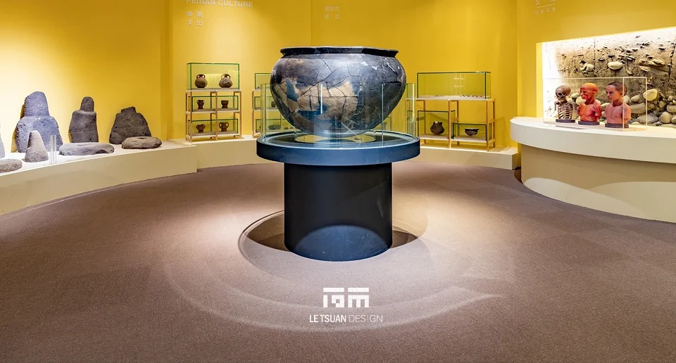
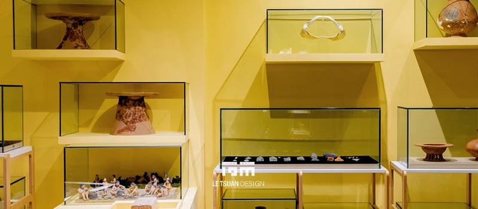
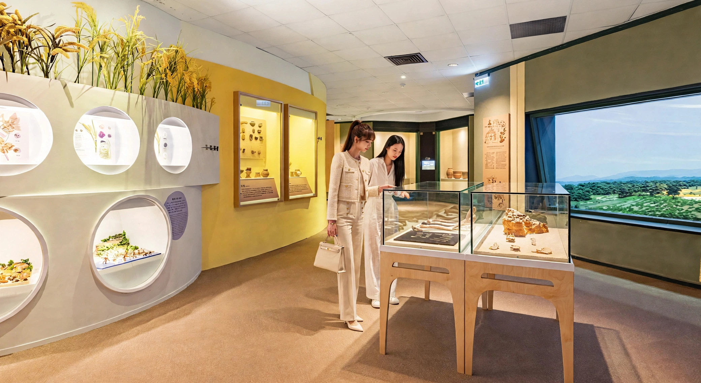
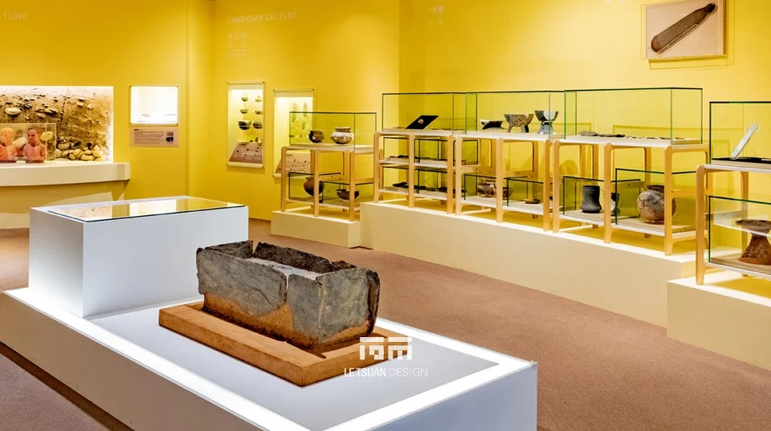
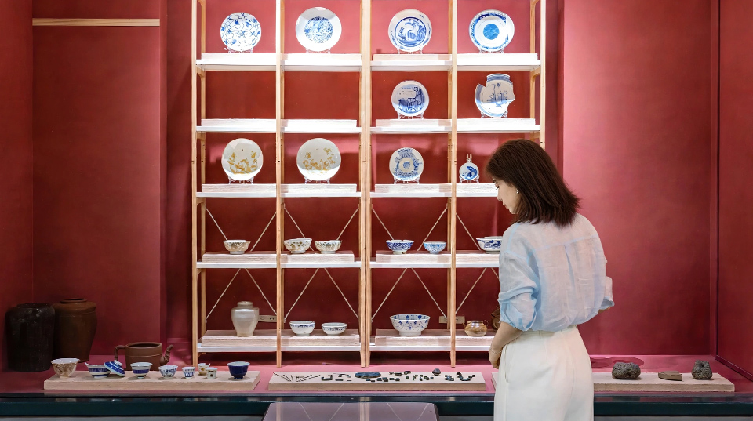
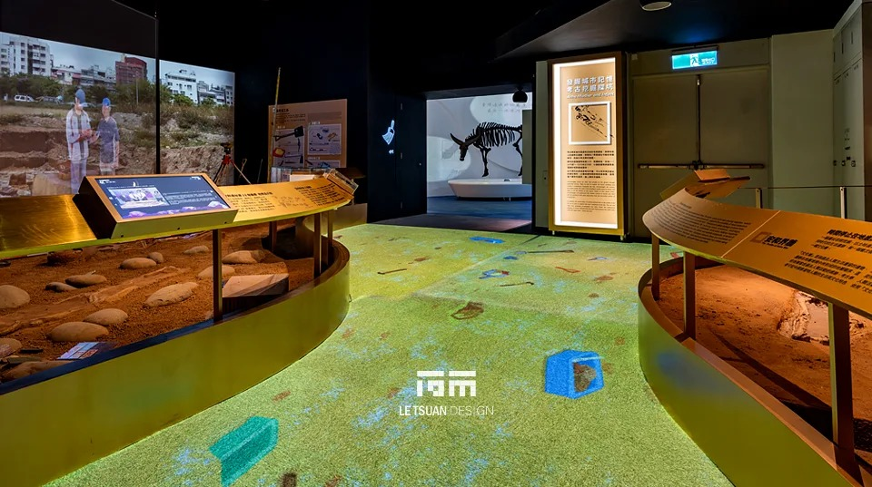
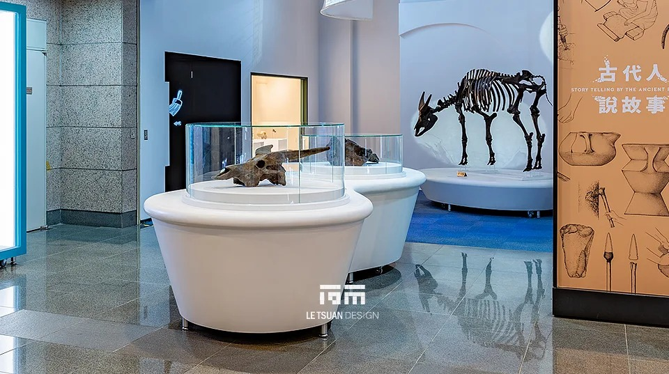
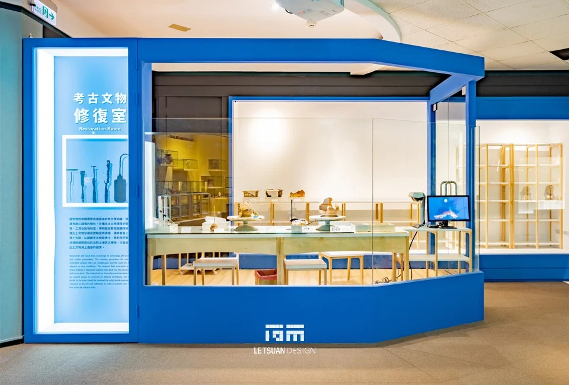
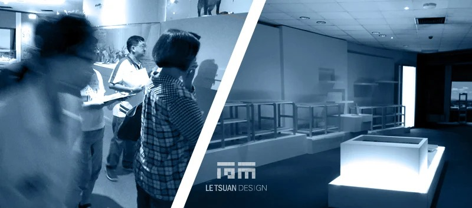

Five Thousand Years of Silence Story telling by the ancient people
LOCATION
Taichung, Taiwan
YEAR
2020
CATEGORY
Construction
A Renovation Next Door, With Old Exhibits Still in the Room
This update to the permanent exhibition in the Anthropology Hall at the National Museum of Natural Science, titled Story-Telling by the Ancient People, presents the latest research on the Paleolithic culture of Baxian Cave on the east coast, the Neolithic Beinan and Chilin cultures, and the Dapenkeng, Niumatou, Damaling, Yingpu, and Fanziyuan cultures of central Taiwan.
The exhibition's centerpiece is the Anhe Mother and Child, one of Taiwan's most significant archaeological discoveries. Within the Dapenkeng cultural layer of the Anhe site, 48 sets of tightly arranged human remains form the earliest known burial ground yet discovered in central Taiwan. The M13 and M15 specimens were found with extensive grave goods, the male specimen M46 wore a shark-tooth-shaped jade ornament, and a mother and infant were buried together; all four are treated as representative examples of the burial ground.
Demolition Next to Exhibits That Had to Stay
This was a partial update within a single permanent exhibition zone. Some exhibits stayed in place while others were demolished and rebuilt, and the fixtures and cases left standing sat directly next to the ongoing demolition work, with vibration and dust as the most immediate threats. Construction had to hold these risks to an absolute minimum so the demolition and new work never damaged the exhibits and collection items left in place.
The old exhibition structure also contained large amounts of FRP, plaster, and wire-mesh composite material. Once removed, that material could only be handled by a contractor holding a valid environmental disposal license, and because only a limited number of qualified contractors exist, scheduling the demolition and removal took considerably longer than simply arranging for someone to clear it out.
Bronze, Then Colour, Then Time
The entrance display platform was finished with a special antique-bronze lacquer, so visitors sense the bronze-and-jade timeframe of the show through material and colour before they read a single label. The exhibition is organized into thematic zones by archaeological era, with wall colour distinguishing the Beinan culture, the Dapenkeng culture, and the others, linked by a curved circulation path that moves visitors through each cultural unit in chronological order.
Cases Built to the Object, Not the Other Way Around
Display cases vary in form depending on what they hold: wood-framed glass shelving cases for ceramics and jade ornaments and other small pieces, circular glass-domed pedestals for single featured artifacts such as pottery vessels, and multi-tiered recessed wall cases for layering items of different sizes. An "Archaeological Conservation Lab," separated from the visitor path by a glass curtain wall, lets people watch actual preservation and restoration work in progress. Floor-projection interactive devices and a large-scale animated video wall, paired with physical displays of fossilized skeletal specimens, bring the atmosphere of an archaeological dig and prehistoric ecological scenes in front of the visitor.
RELATED PROJECTS








